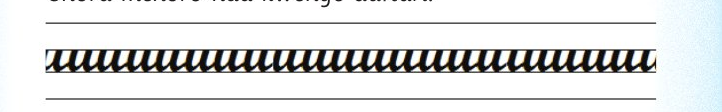
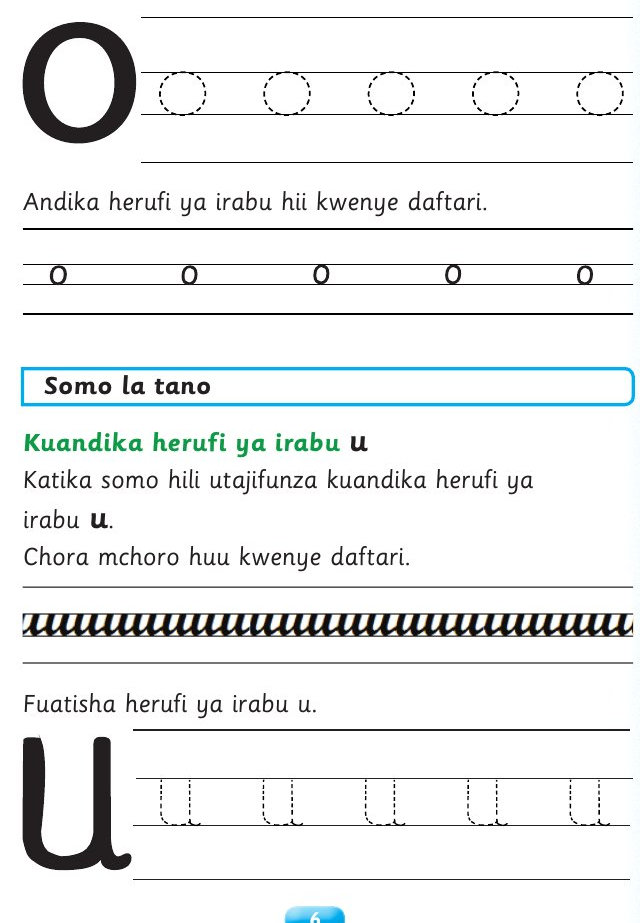

Somo la tano: u
Somo la tano
u
Kuandika herufi ya irabu
Katika somo hili utajifunza kuandika herufi ya
u
irabu .
Chora mchoro huu kwenye daftari.

Andika jibu kwa mkono katika sehemu hii.
Fuatisha herufi ya irabu u.

Andika jibu kwa mkono katika sehemu hii.